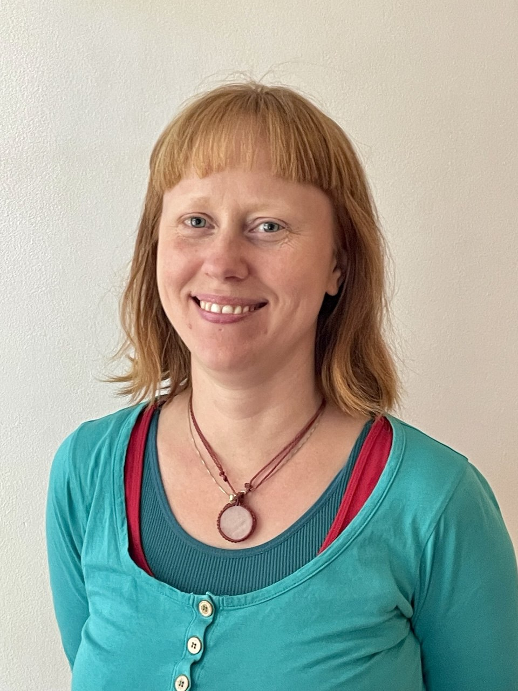

Dr. Siri Moen Gjersøe
Linguistics • Tone & Prosody • NLP & Language Technology
I hold a PhD in Linguistics from Leipzig University and specialize in suprasegmental morphology, tone, and West Nilotic languages, with a focus on Nuer.
Alongside academic research, I work with NLP, NLU, and AI-based language systems in industry.

Highlights
Language & Speech (2023)
Perceptual sensitivity to tonal alignment in Nuer.
NLP & Automotive NLU
Grammar-based NLU, Python pipelines, and deployment.
Writing & Research Notes
Linguistics, AI, research culture.